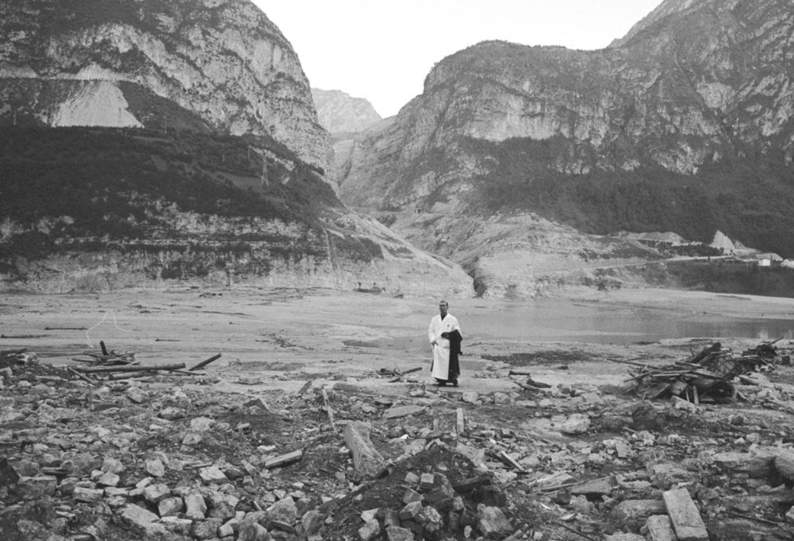

Il Racconto del Vajont
(current)
le voci
Borsato, Felice
Buzzati, Dino
Cameri, Gianni
Canestrini, Sandro
Comin, Fulvio
Cro, Susanna
De Jeso, Alvise
Fioretti, Renato
Fossali, Gino
Longo, Giuseppe
Manzano, Arturo
Marpicati, Iros
Merlin, Tina
Moroldo, Gianfranco
Niccolini, Francesco
Paolini, Luciano
Paolini, Marco
Pavonello, Enrico
Ragogna, Giuseppe
Reberschak, Maurizio
Schinko, Paolo
Zanfron, Giuseppe
l’orologio fermo
la valle del Piave
Gianfranco Moroldo
Un cappellano militare sul greto del Piave

METADATA
Descrizione dell'Item
×
Tipo
Fotografia di reportage
AAT
Titolo
Un cappellano militare sul greto del Piave
Autore
Gianfranco Moroldo
VIAF
Data
ottobre 1963
Luogo
Longarone
GeoNames
Editore
Corriere della Sera
VIAF
SBN
LCNAF
ACNP
Fonte
Archivio RCS Periodici - Fondazione Corriere
Colore
B/N
Supporto
Analogico
AAT
WordNet
Carta fotografica
AAT
WordNet
Formato della copia digitale
PNG
Larghezza della copia digitale
1239 px
Altezza della copia digitale
845 px
Dimensione della copia digitale
1.15 mb
Risoluzione della copia digitale
32 bpp
Standard catalografico
CDWA
Classificazione Decimale Dewey
945.779
Keywords
#vajont #1963 #moroldo #foto #corriere #prete #piave